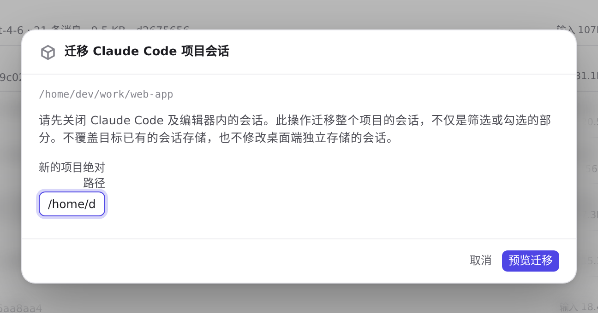
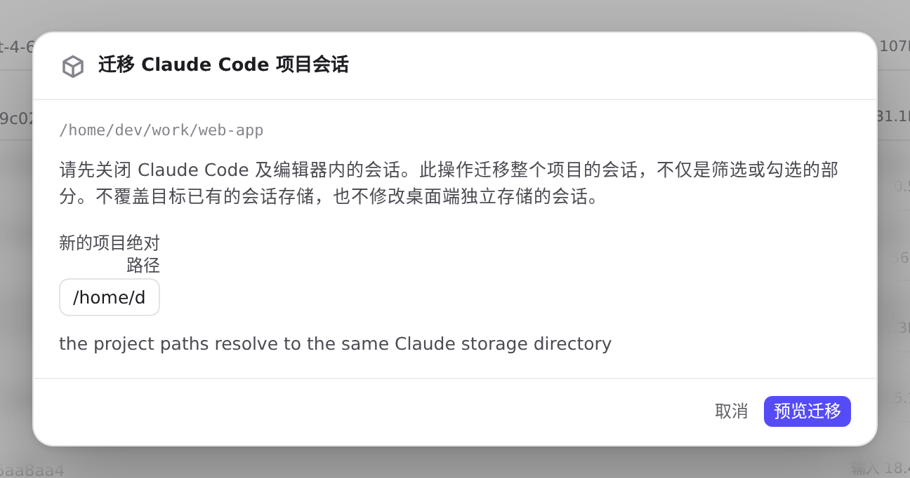

#1131 界面预览
commit e8263cd · 回到 PR · 会话页的 Claude Code 项目分组行新增「迁移项目会话」入口，点开一个对话框：显示原项目路径与警告说明、可填写新的绝对路径，点「预览迁移」后同一按钮变为「确认迁移」，并配有全套中文文案。
红线是鼠标走过的轨迹，红色圆环是一次点击；底部文字是这一步在做什么。空格暂停，← → 逐段查看。
会话页的迁移入口与对话框 · 会话页：Claude Code 的项目分组列表

会话页的迁移入口与对话框 · 对话框：原路径、关闭客户端的说明与新路径输入框

会话页的迁移入口与对话框 · 点击「预览迁移」后对话框里的内容